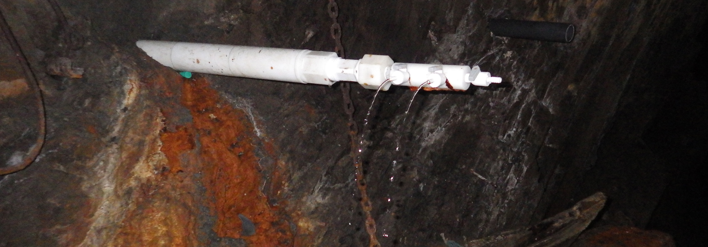

Contact
Questions? Feel free to contact us by filling out the form below.
Welcome to the
Deep Mine Microbial Observatory
DeMMO is located in the former Homestake gold mine at the Sanford Underground Research Facility (SURF) in Lead, South Dakota, USA. The Homestake Mine was active between 1876 and 2001, reaching a depth of over 8100 ft (2469 m) below land surface, and producing 1,101 metric tons of gold. The site was donated to the state of South Dakota in 2006 and was ultimately developed into a dedicated science facility.
DeMMO is a series of boreholes within the facility that intersect fluid-filled fractures spanning depths of 800-4,850 feet.
SURF is hosted in heavily deformed, iron-rich, Paleoproterozoic metasediments that document oceanic volcanism and subsequent infilling of the marine basin. Both the Precambrian age and iron-rich character of the rocks at SURF affect the chemistry of the borehole fluids, contributing to the diverse array of microbial inhabitants.
In 2013 the NASA Astrobiology Institute Team Life Underground began work at SURF, characterizing geochemistry, microbiology, and redox reaction energetics at key sites with an eye toward habitability. DeMMO was officially established in 2016, and routine sampling and experiments are ongoing. Studies thus far have revealed distinct populations of subsurface microbes, many from wholly uncultivated lineages, with interesting metabolic strategies tailored to subsurface, rock-associated habitats. Find out what we've learned in more detail by exploring the links in the Projects section below.

DeMMO collaborators come from all over the world, including research groups from
Northwestern University, Desert Research Institute, University of Southern California,
Jet Propulsion Laboratory, and Bigelow Laboratory. Click on the images to learn more about the DeMMO team.


Find out more about exciting projects at DeMMO!
Find out how we're characterizing the attached biosphere in the deep subsurface!
More In the NewsLearn more about ongoing metagenomic surveys at DeMMO!
MoreFind out how we isolate microorganisms in the lab!
MoreLearn how we're characterizing lipid biomarkers in DeMMO microbial communities!
MoreFind out what we've learned from over two years of monitoring fracture fluid communities at DeMMO!
More PubsQuestions? Feel free to contact us by filling out the form below.